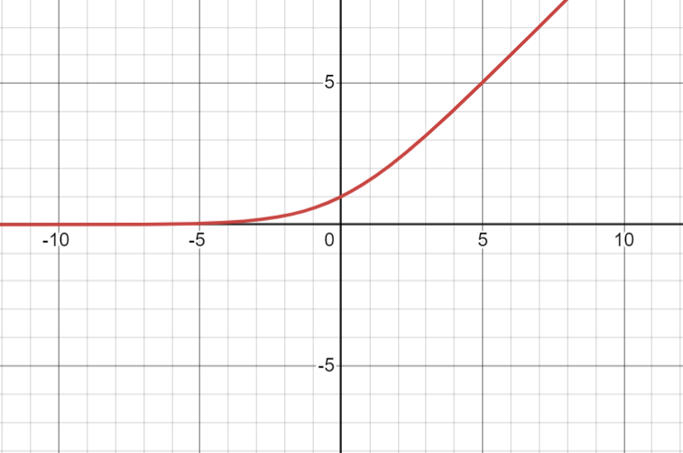
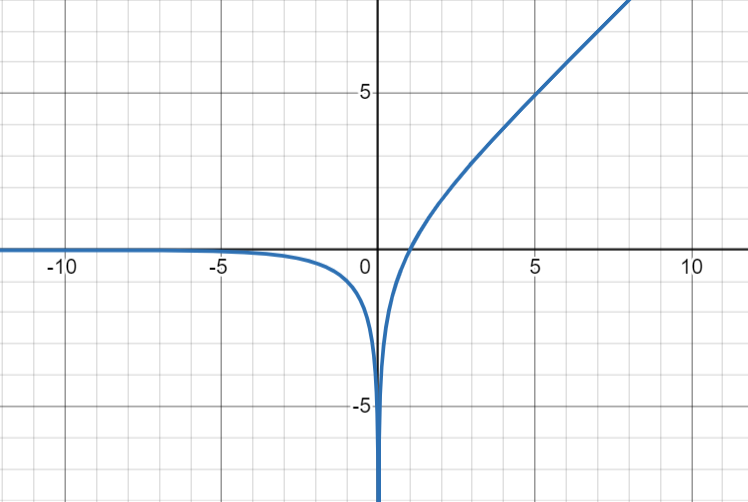
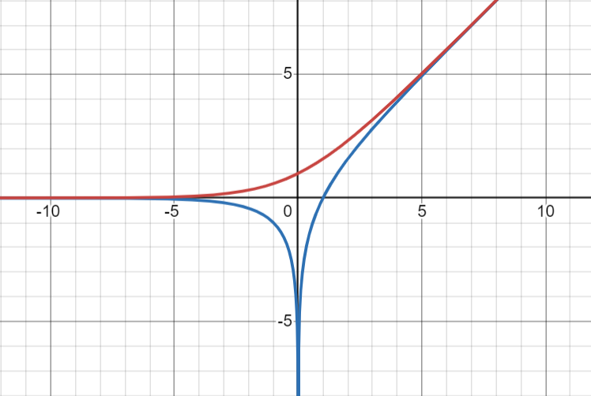

Fun with Forth Recognizers
⍽⍽⍽⍽⍽⍽⍽⍽⍽⍽⍽⍽⍽⍽⍽
April 27, 2024
Forth Recognizers
┄───────────────┄
• Matthias Trute RfD in 2018
• Allow extension of the Forth interpreter
◦ Change what happens while parsing + interpreting
◦ Compose set of "recognizers" of different types
◦ Extend literals, add strings, and more
• Homologous to changing colorForth color dispatch
• Caveat: I'm ignorant of the standards process
Terminology
┄─────────┄
Recognizer = Word given the chance to handle parsing
Recognizer Sequence / Stack = Ordered set of recognizers
Recognizer Type = Dispatch table returned by a recognizer
Recognizer Types
┄──────────────┄
RECTYPE: ( xt-compile
xt-interpret
xt-postpone
"name" -- )
: RECTYPE: ( xt1 xt2 xt3 "name" -- ) CREATE , , , ;
: do-notfound ( a n -- ) -1 'notfound @ execute ;
' do-notfound ' do-notfound ' do-notfound RECTYPE: RECTYPE-NONE
' execute ' , ' postpone, RECTYPE: RECTYPE-WORD
' execute ' execute ' , RECTYPE: RECTYPE-IMM
' drop ' execute ' execute RECTYPE: RECTYPE-NUM
: RECOGNIZE ( c-addr len addr1 -- i*x addr2 )
dup @ for aft
cell+ 3dup >r >r >r @ execute
dup RECTYPE-NONE <> if rdrop rdrop rdrop rdrop exit then
drop r> r> r>
then next
drop RECTYPE-NONE
;
Recognizer Stacks/Sequences
┄─────────────────────────┄
RECSTACK ( -- a )
+RECOGNIZER ( xt -- )
-RECOGNIZER ( -- )
GET-RECOGNIZERS ( -- xtn..xt1 n )
SET-RECOGNIZERS ( xtn..xt1 n -- )
create RECSTACK 0 , 10 cells allot
: +RECOGNIZER ( xt -- )
1 RECSTACK +! RECSTACK dup @ cells + ! ;
: -RECOGNIZER ( -- ) -1 RECSTACK +! ;
: GET-RECOGNIZERS ( -- xtn..xt1 n )
RECSTACK @ for RECSTACK r@ cells + @ next ;
: SET-RECOGNIZERS ( xtn..xt1 n -- )
0 RECSTACK ! for aft +RECOGNIZER then next ;
: postpone ( "name" -- )
bl parse RECSTACK RECOGNIZE @ execute ; immediate
: +evaluate1
bl parse dup 0= if 2drop exit then
RECSTACK RECOGNIZE state @ 1+ 1+ cells + @ execute
;
: REC-FIND ( c-addr len -- xt addr1 | addr2 )
find dup if
dup immediate? if RECTYPE-IMM else RECTYPE-WORD then
else
drop RECTYPE-NONE
then
;
' REC-FIND +RECOGNIZER
: REC-NUM ( c-addr len -- n addr1 | addr2 )
s>number? if
['] aliteral RECTYPE-NUM
else
RECTYPE-NONE
then
;
' REC-NUM +RECOGNIZER
also recognizers definitions
: REC-FNUM ( c-addr len -- f addr1 | addr2 )
s>float? if
['] afliteral RECTYPE-NUM
else
RECTYPE-NONE
then
;
' REC-FNUM +RECOGNIZER
previous definitions
: interpret0 begin +evaluate1 again ; interpret0
Effect on uEforth
┄───────────────┄
• PROs:
◦ Allows removing int/float parsing from core
- In theory, can be done in Forth
◦ Allows removing int/float parsing from core
• CONs:
◦ Requires opcodes for 0, 1, -1, 10, 41
◦ Fairly complex
PARSE
FIND
CREATE
EVALUATE1
┄───────────────┄
S>FLOAT?
S>NUMBER?
Applications
┄──────────┄
• New kinds of literals:
◦ Complex Numbers - 12-43i
◦ Rational Numbers - 22/7
◦ Logarithmic Number Systems - ~123
◦ Strings - "No need for a space"
◦ Atoms - 'myname
◦ New base prefixes - b$11010010
• General prefix/suffix:
◦ Store to Values - 123 >myvar
◦ Defining Syntax - square: dup * ;
Logarithmic Number Systems
┄────────────────────────┄
• Compute on fixed-point logarithms
• Use Gaussian Logarithms for add/subtract
log(x) + log(y) = log(x * y)
log(x) - log(y) = log(x / y)
log(x) * n = log(x ^ n)
Gaussian Logarithms
┄─────────────────┄
log2(x) + S(log2(y) - log2(x)) = log2(x + y)
log2(x) + D(log2(y) - log2(x)) = log2(|x - y|)
S(x) = log2(1 + 2^x)
D(x) = log2(|1 - 2^x|)
@summer.png

@differ.png

@both.png

log2(x) + S(log2(y) - log2(x))
= log2(x) + S(log2(y / x))
= log2(x) + log2(1 + 2^log2(y / x))
= log2(x) + log2(1 + y / x)
= log2(x + y)
LNS vs Floating Point vs Fixed
┄────────────────────────────┄
• LNS uniformly log scale vs tiered
• If you know your range, use fixed-point!
• LNS add/subtract is expensive
◦ Table vs CORDIC
- 89 (4-bit), 2440 (8-bit)
• Most problems have an actual scale
◦ But Audio, Light, Ritcher scale,
are actually logarithmic
LNS Syntax
┄────────┄
~3.14159
~22 ~7 ~/ CONSTANT PI
~100 ~20 ~3 ~+ ~+ ~.
: ~* ( ~ ~ -- ~ ) + ;
: ~/ ( ~ ~ -- ~ ) - ;
: ~/1 ( ~ -- ~ ) negate ;
: ~>f ( ~ -- f ) 2e s>f ~precision s>f f/ f** ;
: f>~ ( f -- ~ ) fln 2e fln f/ ~precision s>f f* 0.5e f+ floor f>s ;
: ~. ( ~ -- ) ~>f f. ;
: ~summer ( ~ -- ~ ) ~>f 1e f+ f>~ ;
: ~differ ( ~ -- ~ ) 1e ~>f f- fabs f>~ ;
: ~order ( ~ ~ -- ~ ~ ) 2dup max >r min r> ;
0 value entries
: tabulate
begin
entries ~summer ,
entries ~differ ,
1 +to entries
entries ~summer entries =
entries ~differ entries = and if exit then
again
;
create table tabulate
: ~summer1 ( ~ -- ~ ) dup entries < if 2* cells table + @ then ;
: ~differ1 ( ~ -- ~ ) dup entries < if 2* 1+ cells table + @ then ;
: ~+ ( ~ ~ -- ~ ) ~order over - ~summer1 + ;
: ~- ( ~ ~ -- ~ ) ~order over - ~differ1 + ;
0 value result
0 value places
0 value fract
: !digit ( ch -- ) dup [char] 0 < over [char] 9 > or if -1 throw then ;
: =digit ( ch -- )
dup [char] . = if drop -1 to fract exit then
!digit
[char] 0 - to result ;
: +digit ( ch -- )
dup [char] . = if drop -1 to fract exit then
!digit
fract if 1 +to places then
[char] 0 - result 10 * + to result ;
: ~conv ( a n -- )
>r 1+ dup c@ =digit r>
2 - for aft 1+ dup c@ +digit then next
drop
result s>~ 10 places dig ~/
['] aliteral rectype-num
;
: rec-~ ( a n -- )
dup 2 < if 2drop rectype-none exit then
over c@ [char] ~ <> if 2drop rectype-none exit then
0 to fract
0 to result
0 to places
['] ~conv catch if 2drop rectype-none exit then
;
' rec-~ +recognizer
DEMO
QUESTIONS❓
🙏
Thank you!
┄────────────────────────┄
http://eforth.appspot.com/